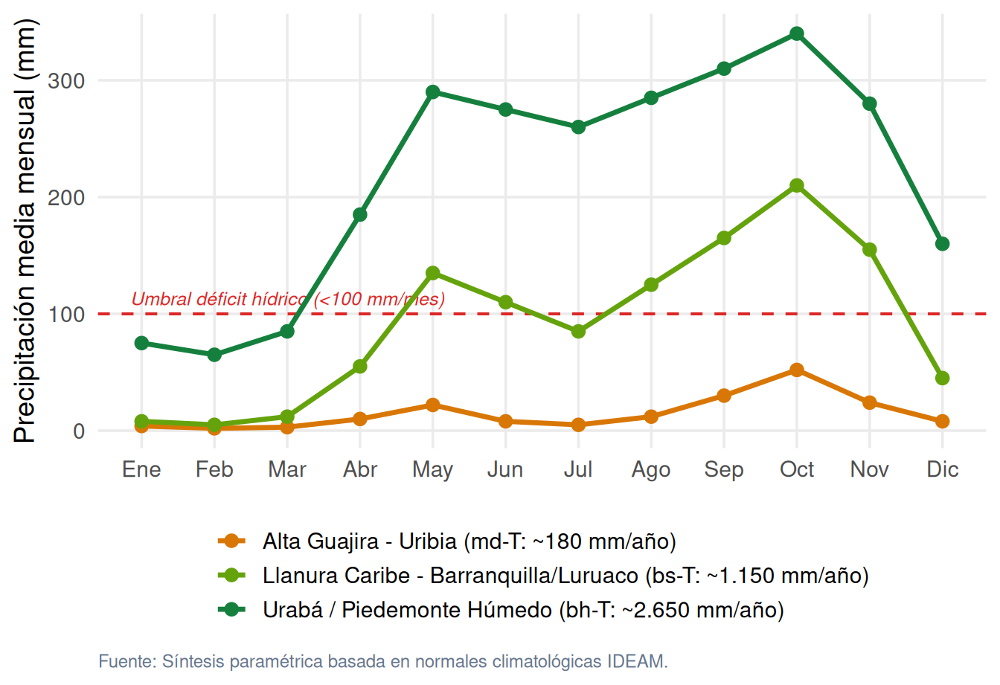

Zonas de Vida Ecológicas del Caribe Colombiano
Fundamentos bioclimáticos, inventario regional y perspectivas ante el cambio climático
1. La Paradoja Bioclimática del Caribe
“En un mismo arco geográfico, el Caribe colombiano comprime prácticamente todo el espectro de zonas de vida tropicales del planeta.”
- Extremo hiperárido: Península de La Guajira con precipitaciones de 150 – 200 mm/año (
md-T). - Extremo nival: Cumbres de la Sierra Nevada de Santa Marta a 5.775 m s.n.m. (< 0 °C).
- Extremo húmedo basal: Transición suroccidental hacia el Golfo de Urabá (
bh-T/bp-T).

md-T). Foto: Gatocalvo (CC BY-SA 4.0, Wikimedia Commons)El Bosque Seco Tropical (bs-T): Ecofisiología y Biodiversidad
El Filtro de la Estacionalidad
- Soporta 4 a 6 meses secos al año con precipitaciones
< 100 mm/mes. - Caducifolia sincrónica: Pérdida foliar en estiaje seguida de floración masiva al inicio de lluvias.
- Especies diagnósticas: Bursera simarouba (indio desnudo), Cavanillesia platanifolia (macondo), Astronium graveolens, Tabebuia rosea, Samanea saman.
- Biodiversidad (IAvH): ~2.600 plantas (83 endémicas), ~230 aves (33 endémicas) y ~60 mamíferos.

bs-T). Foto: MinAmbiente Colombia (CC BY-SA 4.0, Wikimedia Commons)Ecosistemas Azonales: Donde el Agua Supera al Clima
Cuando la hidrología y la salinidad dominan sobre el macroclima, emergen los Pedobiomas:
- Halobioma del Caribe (Manglares y lagunas costeras):
- Ciénaga Grande de Santa Marta: Mayor laguna costera del país, articulada con los ríos de la SNSM y el río Magdalena.
- Otros nodos: PNN Tayrona, Vía Parque Isla de Salamanca, Bahía Portete y SFF Los Flamencos.
- Helobiomas Continentales:
- Depresión Momposina, complejo cenagoso de Zapatosa, Canal del Dique y ciénagas de Lorica y El Porro (180 especies de aves registradas).

Contrastes Visuales de la Alta Montaña Caribeña